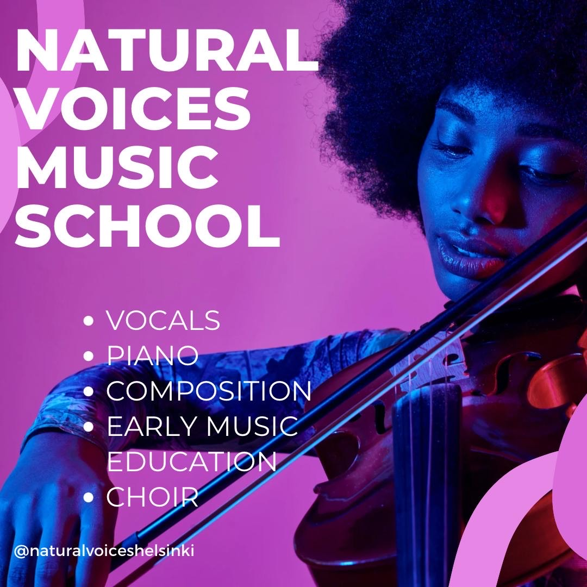
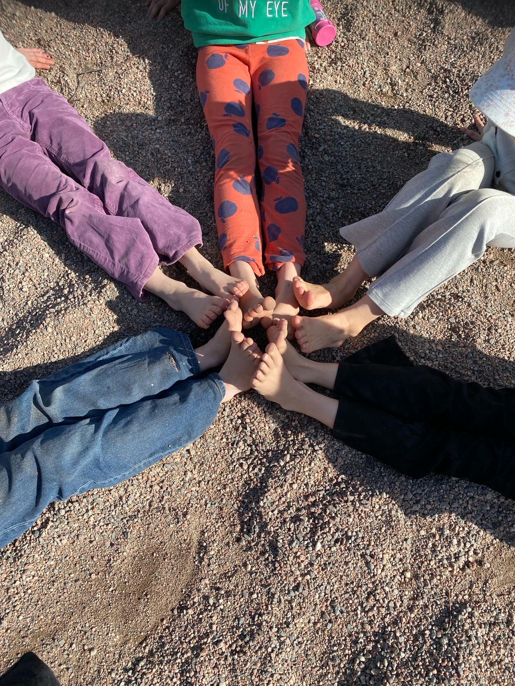
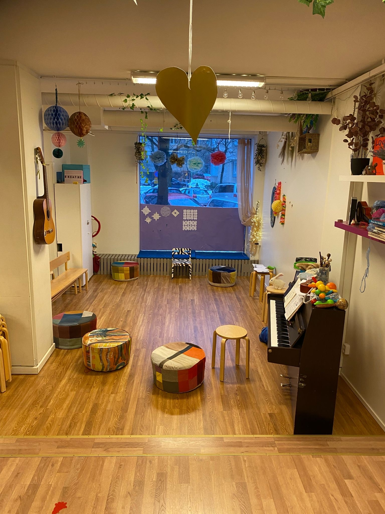

Natural Voices
☰
Musiikkikoulu
Iltapäiväkerho
Varhaisiän musiikkikasvatus
Harrastamisen Suomen malli
Tilavuokraus
Musiikkikoulu

Iltapäiväkerho

Varhaisiän musiikkikasvatus

Harrastamisen Suomen malli
Tilavuokraus
Sisältö tulossa...
HSL Reittiopas